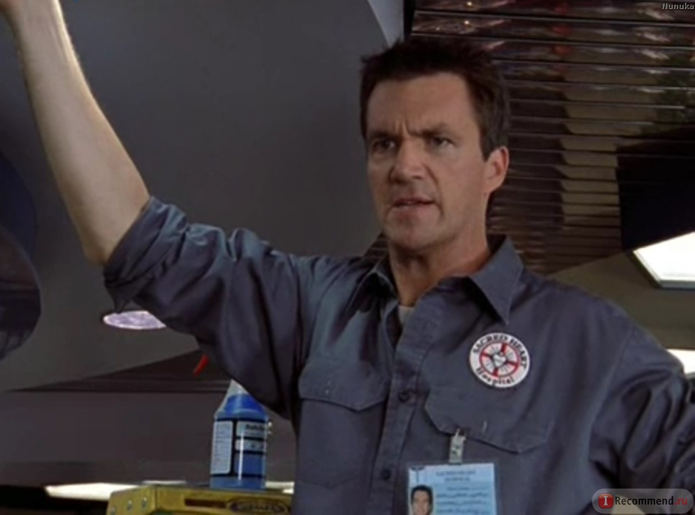
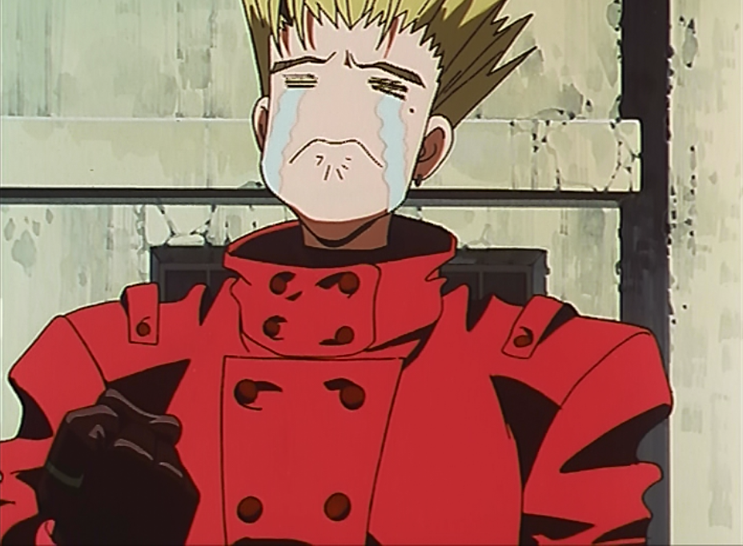

Как быть молодцом
Как быть молодцом
О чём сегодня поболтаем?
Задачи и их решения
Мне обещали рост
Что делать, когда закончилась работа
Принципы
И кое о чём еще
Задачи
Создание процессов
Defenition of done
Принципы
Ответственность
Зачем и куда расти
Литература
Коллеги
Github
Pet-projects
Нет задач?

Если серьезно
Работа есть всегда, возможно, она вам попросту не нравится?
Принципы
Не выдавать желаемое за действительное
Не давать обещаний, которые не собираетесь выполнять
Уважать чужое время
Было еще что-то важное, но я забыл
— Naaaaeeeh
Если всё так просто, то почему всё так плохо?

Вопросы